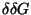

The mfold software uses what are called nearest neighbor energy rules. That is, free energies are assigned to loops rather than to base pairs. These have also been called loop dependent energy rules. In an effort to keep this article as self-contained as possible, we are including some well-known definitions that may be found elsewhere [21,22,23].
A secondary structure, S on an RNA sequence, , is a set of base pairs. A base pair between nucleotides ri and rj (i<j) is denoted by i.j. A few constraints are imposed.
Pseudoknots [24,25,26,27,28,29] and base triples are not excluded for frivolous reasons. When pseudoknots are included, the loop decomposition of a secondary structure breaks down and the energy rules break down. Although we can assign reasonable free energies to the helices in a pseudoknot, and even to possible coaxial stacking between them, it is not possible to estimate the effects of the new kinds of loops that are created. Base triples pose an even greater challenge, because the exact nature of the triple cannot be predicted in advance, and even if it could, we have no data for assigning free energies.
A base ri' or a base pair i'.j' is called accessible from a base pair i.j if i < i' ( < j') < j and if there is not other base pair, k.l such that i < k < i' ( < j' ) < l < j. The collection of bases and base pairs accessible from a given base pair, i.j, but not including that base pair, is called the loop closed by i.j. We denote it by L(i.j). The collection of bases and base pairs not accessible from any base pair is called the exterior (or external) loop, and will be denoted by Le here. It is worth noting that if we imagine adding a 0th and an (n+1)stbase to the RNA, and a base pair 0.(n+1), then the exterior loop becomes the loop closed by this imaginary base pair. We call this the universal closing base pair of an RNA structure. If S is a secondary structure, then S' denotes the same secondary structure with the addition of the universal closing base pair. The exterior loop exists only in linear RNA. It is treated differently than other loops because we assume as a first approximation that there are no conformational constraints, and therefore no associated entropic costs.
Any secondary structure, S decomposes an RNA uniquely into
loops. We can write this as:
A 1-loop is called a hairpin loop. Polymer theory predicts that
the free energy increment,
,
for such a loop is given by
Figure 1 shows the information stored in the loop file.
DESTABILIZING ENERGIES BY SIZE OF LOOP (INTERPOLATE WHERE NEEDED) hp3 ave calc no tmm;hp4 ave calc with tmm; ave all bulges SIZE INTERNAL BULGE HAIRPIN ------------------------------------------------------- 1 . 3.8 . 2 . 2.8 . 3 . 3.2 5.6 4 1.7 3.6 5.5 5 1.8 4.0 5.6 6 2.0 4.4 5.3 7 2.2 4.6 5.8 8 2.3 4.7 5.4 ... 30 3.7 6.1 7.7 |
5' --> 3' 5' --> 3'
WX CX
ZY GY
3' <-- 5' 3' <-- 5'
Y: A C G U A C G U
------------------ -----------------
X:A | aAA aAC aAG aAU -1.5 -1.5 -1.4 -1.8
C | aCA aCC aCG aCU -1.0 -0.9 -2.9 -0.8
G | aGA aGC aGG aGU -2.2 -2.0 -1.6 -1.2
U | aUA aUC aUG aUU -1.7 -1.4 -1.9 -2.0
|
In addition, the effects of terminal mismatched pairs are taken into account for hairpin loops of size greater than 3. For loops of size 4 and greater closed by a base pair i.j, an extra is applied. This is referred to as the terminal mismatch free energy for hairpin loops. These parameters are stored in a file named tstackh.dg or tstackh.TC, as above. The data are arranged in 4 × 4 tables that each comprise 4 rows and columns. Figure 2 illustrates how the parameters are stored.
Both the loop and tstackh files treat hairpin loops in a generic way, and assume no special structure for the bases in the loop. We know that this is not true in general. For example, the anti-codon loop of tRNA is certainly not unstructured. For certain small hairpin loops, special rules apply. Hairpin loops of size 3 are called triloops and those of size 4 are called tetraloops. Files of distinguished triloops and tetraloops have been created to store the free energy bonus assigned to those loops. These parameters are stored in files triloop.dg and tloop.dg, respectively (or triloop.TC and tloop.TC for a specific temperature, TC). Some typical entries are given in Figure 3
Seq Energy ------------- GGGGAC -3.0 ... CGAAGG -2.5 CUACGG -2.5 ... GUGAAC -1.5 UGGAAA -1.5 |
Finally, there are some special hairpin loop rules derived from experiments that will be defined explicitly here. A hairpin loop closed by ri and rj (i<j) called a ``GGG'' loop if ri-2 = ri-1 = ri = G and rj = U. Such a loop receives a free energy bonus that is stored in the miscloop.dg or miscloop.TC file, which contains a variety of miscellaneous, or extra free energy parameters. Another special case is the ``poly-C'' hairpin loop, where all the single stranded bases are C. If the loop has size 3, it is given a free energy penalty of c3. Otherwise, the penalty is c2 + c1 × ls. The constants c1, c2and c3 are all stored in the miscloop file.
To summarize, we can write the free energy,
of a hairpin loop as:
A 2-loop, L
is closed by a base pair i.j and contains a
single base pair, i'.j', satisfying
i < i' < j' < j. In this case,
the loop size, ls(L),
can be written as:
A 2-loop of size 0 is called a stacked pair. This refers to the stacking between the i.j and immediately adjacent base pair contained in the loop. Free energies for these loops are stored in a file named stack.dg, or stack.TC, where TC is a temperature, as defined above. The layout is the same as for the tstackh file. A portion of such a file is given in Figure 4. A group of 2 or more consecutive base pairs is called a helix. The first and last are the closing base pairs of the helix. They may be written as i.j and i'.j', where i < i' < j' < j. Then i.j is called the external closing base pair and i'.j' is called the internal closing base pair. This nomenclature is used for circular RNA as well, even though it depends on the choice of origin.
5' --> 3'
CX
GY
3' <-- 5'
Y: A C G U
----------------------
X:A | . . . -2.1
C | . . -3.3 .
G | . -2.4 . -1.4
U | -2.1 . -2.1 .
|
Only Watson-Crick and wobble GU pairs are allowed as bona fide base pairs, even though the software is written to allow for any base pairs. The reason is that nearest neighbor rules break down for non-canonical, even GU base pairs, and that mismatches must instead be treated as small, symmetric interior loops. Note that the stacks are identical, and yet formally different for and . These stacked pairs are stored twice in the file, and the mfold software checks for symmetry. This is an example of built in redundancy as a check on precision.
A 2-loop, L of size > 0 is called a bulge loop if ls1(L) = 0 or ls2(L) = 0 and an interior loop if both ls1(L) = 0 and ls2(L) = 0.
Bulge loops up to size 30 are assigned free energies from the loop file (See Figure 1). For larger bulge loops, equation 2 is used. When a bulge loop has size 1, the stacking free energy for base pairs i.j and i'.j' are used (from the stack file).
Interior loops have size .
If ls1(L) =
ls2(L),
the loop is called symmetric; otherwise, it is asymmetric,
or lopsided. The asymmetry of an interior loop, a(L) is defined by:
The free energy,
,
of an interior loop is the sum of 4components:
Equation 5 is now used only for loops of size > 4 or of asymmetry > 1. This means that special rules apply to 1 × 1, 1 × 2 and 2 × 2 interior loops. Free energies for these symmetric and almost symmetric interior loops are stored in files sint2.dg, asint1x2.dg and sint4.dg, respectively. As above, the suffix TC is used in place of dg when explicit attention is paid to temperature. These files list all possible values of the single stranded bases, and all possible Watson-Crick and GU base pair closings. The sint2 file comprises a 6 × 6 array of 4 × 4 tables. There is a table for all possible 6 × 6 closing base pairs. The free energy values for each choice of closing base pairs are arranged in 4 × 4 tables. The term ``closing base pairs'' refers to the closing base pair of the loop and the contained base pair of the loop, as in the strict definition of a loop. An example of such a table is given in Figure 5.
5' --> 3' 5' --> 3'
X X
C A C A
G T G U
Y YA
3' <-- 5' 3' <-- 5'
Y: A C G T Y: A C G U
--------------------- ---------------------
X:A | 1.1 2.1 0.8 1.0 X:A | 3.2 3.0 2.4 4.8
C | 1.7 1.8 1.0 1.4 C | 3.1 3.0 4.8 3.0
G | 0.5 1.0 0.3 2.0 G | 2.5 4.8 1.6 4.8
T | 1.0 1.4 2.0 0.6 U | 4.8 4.8 4.8 4.8
|
The asint1x2 file comprises a 24 row by 6 column array of 4 × 4 tables. There is a 4 × 4 table for all possible 6 × 6 closing base pairs and choice of one of the single stranded bases. The free energy values for each choice of closing base pairs and a single stranded base are arranged in 4 × 4 tables. An example of these tables is given in Figure 5.
Finally, the sint4 file contains 36 16 × 16 tables, 1 for each pair of closing base pairs. A 2 × 2 interior loop can have 44 combinations of single stranded bases. If, for example, the loop is closed by a GC base pair and an AU base pair, we can write it as:
5' ------> 3' G \/ \_/ A C /\ | U 3' <------ 5'Both the large `X' and large `Y' refer to an unmatched pair of bases that are juxtaposed. They can each take on 16 different values, from `AA',`AC', , to `UU', or 1 to 16, respectively. The number in row `X' and column `Y' of the table is the free energy of the 2 × 2 interior loop with the indicated single stranded bases. Figure 6 shows the full table for the CG and AU closing base pairs.
5' ------> 3'
C \/ \_/ A
G /\ | U
3' <------ 5'
Y: A A A C C C G G G U U U
A C G A C U A G U C G U
--------------------------------------------------------------
AA 2.0 1.6 1.0 2.0 2.6 2.6 1.0 1.4 0.2 2.3 1.5 2.2
AC 2.4 1.9 1.3 2.4 2.4 2.4 1.3 1.7 -0.4 2.1 0.8 1.5
AG 0.9 0.4 -0.1 0.9 1.9 1.9 -0.1 0.2 -0.1 1.6 1.2 1.8
CA 1.9 1.5 0.9 1.9 1.9 1.9 0.9 1.3 -0.9 1.6 0.4 1.1
CC 2.8 1.8 2.2 2.2 2.2 2.2 2.2 2.2 0.4 1.9 1.7 1.4
X CU 2.7 1.6 2.0 2.1 2.1 2.1 2.0 2.0 0.3 1.8 1.5 1.2
GA 1.0 0.6 0.0 1.0 2.0 2.0 0.0 0.4 0.0 1.7 1.3 2.0
GG 1.8 1.3 0.7 1.8 2.4 2.4 0.7 1.1 0.0 2.1 1.2 1.9
GU 1.8 0.4 1.6 0.8 1.8 1.8 1.6 1.2 -2.0 1.5 -0.7 1.8
UC 2.7 1.6 2.0 2.1 2.1 2.1 2.0 2.0 0.3 1.8 1.5 1.2
UG 0.3 -1.1 0.1 0.7 0.3 0.3 0.1 0.3 -3.5 0.0 -2.2 0.3
UU 2.2 0.7 1.9 1.2 1.2 1.2 1.9 1.5 0.2 0.9 1.5 0.3
|
Some special rules apply to 2-loops. A stacked pair that occurs at the end of a helix has a different free energy than if it were in the middle of a helix. Because of the availablility and precision of data, we distinguish between GC closing and non-GC closing base pairs. In particular, a penalty (terminal AU penalty) is assigned to each non-GC closing base pair in a helix. The value of this penalty is stored in the MISCLOOP file.
Because free energies are assigned to loops, and not to helices, there is no a priori way of knowing whether or not a stacked pair will be terminal or not. For this reason, the terminal AU penalty is built into the TSTACKH and TSTACKI tables. For bulge, multi-branch and exterior loops, the penalty is applied explicitly. In all of these cases, the penalty is formally assigned to the adjacent loop, although it really belongs to the helix.
A ``Grossly Asymmetry Interior Loop (GAIL)'' is an interior loop that is 1 × n, where n>2. The special ``GAIL'' rule that is used in this case substitutes AA mismatches next to both closing base pairs of the loop for use in assigning terminal stacking free energies from the TSTACKI file.
A k-loop, ,
where k > 2, is called a multi-branch
loop. It contains k-1 base pairs, and is closed by a kth base
pair. Thus there are k stems radiating out from this loop.
Because so little is known about the effects of multi-branch loops on
RNA stability, we assign free energies in a way that makes the
computations easy. This is the justification for the use of an affine free energy penalty for multi-branch loops. The free energy,
,
is given by:
Stacking free energies, are computed for multi-branch and exterior loops. In the folding algorithm these are single strand stacking free energies, also known as dangling base free energies, because they are applied to single stranded bases adjacent to a base pair that is either in the loop, or closes the loop. This single stranded base may ``dangle'' from the 5' or 3' end of the base pair. These parameters are stored in a file named dangle.dg or dangle.TC, as above.
Figure 7 shows some single strand stacking free energies.
X X
------------------ ------------------
A C G U A C G U
------------------ ------------------
5' --> 3' 5' --> 3'
CX C
G GX
3' <-- 5' 3' <-- 5'
-1.7 -0.8 -1.7 -1.2 -0.2 -0.3 0.0 0.0
|
If i.j and are 2 base pairs, then rj+1 can interact with both of them. In this case, the stacking is assigned to only 1 of the 2 base pairs, whichever has a lower free energy (usually the 3'stack). If k.l is a base pair and both rk-1 and rl+1 are single stranded, then both the 5' and 3' stacking are permitted. The value of is then the sum of all the single base stacking free energies associated with the base pairs and closing base pair of the loop.
It has been evident for some time that to make the free energy rules more realistic for multi-branch and exterior loops, and to improve folding predictions, we would be compelled to take into account the stacking interactions between adjacent helices. Two helices, and in a multi-branch or exterior loop are adjacent if there are 2 base pairs i.j and , i.j and or i.j and that close and , respectively. The last 2 cases can only occur in a multi-branch loop. In addition, we define almost adjacent helices as 2 helices where the addition of a single base pair (usually non-canonical), results in an adjacent pair. The concept of adjacent helices is important, since they are often coaxial in 3 dimensions, with a stacking interaction between the adjacent closing base pairs. The concept of almost adjacent comes from tRNA where, in many cases, the addition of a GA base pair at the base of the anti-codon stem creates a helix that is adjacent to, and stacks on, the D-loop stem.
Mfold does not yet take into account coaxial stacking of adjacent or almost adjacent helices. The efn2 program that re-evaluates folding energies based on our best estimates does take this into account. It is not a trivial matter to decide which combination of coaxial stacking and single base stacking gives the lowest free energy in a multi-branch or external loop, and a recursive algorithm is employed to find this optimal combination. For example, coaxial stacking excludes single base stacking adjacent to the stacked helices. Free energies for the stacking of adjacent helices are stored in a file called coaxial.dg. The format is the same as for stack.dg. When 2 helices are almost adjacent, then 2 files, named coaxstack.dg and tstackcoax.dg are used. The format is the same as for stacking free energies. The use of these 2 files is explained with the aid of Figure 8. Thus, in the efn2 program, is a combination of single base stacking and coaxial stacking, depending on the loop.
In the case of circular RNA, the choice of origin is arbitrary. However, once it is made, what would be the exterior loop in linear RNA becomes equivalent to a hairpin, bulge, interior or multi-branch loop, or a stacked pair.
The Turner parameters for RNA folding have been published and summarized a number of times. The most significant older publications are [31,32,33], and mfold was originally used these results alone. Version 1 of mfold had no tloop.dg file, and there was a single terminal stacking free energy file, tstack.dg. Tetraloop bonus free energies were added in version 2.0. The tstack file was split into 2 files in version 2.2. Version 3.0 introduces triloop bonus energies, and both tetraloop and triloop bonus energies now depend on the closing base pair. Special rules for small interior loops are also new. For example, the 2 × 2 interior loop rules have evolved from [34]. Coaxial stacking was also introduced in version 3.0, although it's importance was realized eariler [35].
A complete set of DNA folding parameters have recently become available [36]. These are based on measuremments for stacking and mismatches, and on the literature for loop and other effects. Parameters are also available for predicting the formation of RNA/DNA duplexes [37].
 | Michael Zuker Institute for Biomedical Computing Washington University in St. Louis 1998-12-05 |